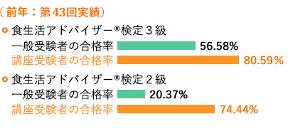
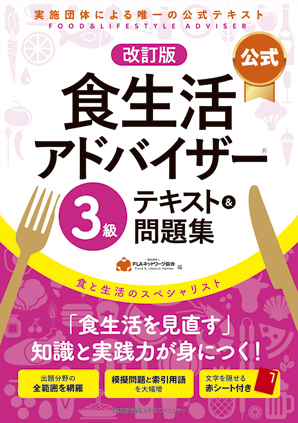
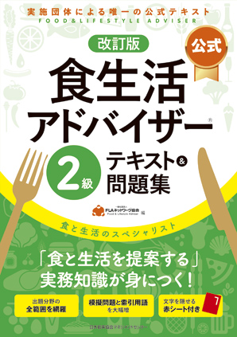

合格講座概要
試験対策だけに的を絞った講座ですから学習の仕上げに最適です。合格という的を射止めましょう！
申込期間:2022年3月1日(火)～5月16日(月)※5月16日（月）入金分まで有効
合格講座はこんな方にオススメです。
-
合格をより
確実にしたい -
ご自分の「理解度」を
確認したい -
効率的な学習方法を
知りたい
合格講座・受講のメリット
- 試験の3週間前から開講されますので、本試験に向けての最終調整ができます。
- 出題パターンや正答率を上げるテクニックを知り、限られた時間のなかでも慌てずに正答するための解答力を身につけることができます。
- 受講することで自身の苦手科目が明確になり、本試験までに効果的な学習が可能となります。
- 本試験を想定した「模擬問題集」を活用しながら公認講師が詳しく解説をすることで試験の重要ポイントがつかめます。
- 独学で困ることは、「質問」ができないこと。合格講座なら、わからないことがあっても講師に質問ができるので安心です。
特典
合格講座用模擬問題集（講座当日配布します）


各級ごとの合格率

実施会場
【2022年 第47回】
| 東京 | ①6/11(土) ②6/12(日) ③6/18(土) ④6/19(日) |
日本教育会館 |
|---|---|---|
| 福岡 | ①6/11(土) ②6/12(日) |
リファレンス駅東ビル |
| 仙台 | ①6/11(土) ②6/12(日) |
仙台青葉ｶﾙﾁｬｰｾﾝﾀｰ |
| 大阪 | ①6/11(土) ②6/12(日) |
新大阪丸ビル別館 |
| 名古屋 | ①6/11(土) ②6/12(日) |
名古屋市中小企業振興会館 |
※ いずれも1日で完結します。
※ 同じ日に2級・3級を同時に受講することはできません。
時間
（全会場・全日程共通予定）
| 午前 | 10時20分～12時50分 |
|---|---|
| お昼休み | 12時50分～13時40分 |
| 午後 | 13時40分～16時10分 |
※ 午前、午後それぞれ3科目ずつ授業を進めます。
申込方法
合格講座のお申込みは、検定事務局から送られてくる受験案内に同封の専用振込用紙（払込取扱票）に必要事項を記入し、ゆうちょ銀行または郵便局にて受講料をお振込ください。
受講料
- 3級：12,000円（税込）
- 2級：18,000円（税込）
申込期間
2022年3月1日（火）～5月16日（月）
※5月16日（月）入金分まで有効
合格講座指定教材
※ 必ず事前に書店にてお買い求めいただき、ご持参ください。
講座当日の販売はいたしません
-

食生活アドバイザー® 3級
公式テキスト＆問題集
（ 日本能率協会マネジメントセンター） -

食生活アドバイザー® 2級
公式テキスト＆問題集
（ 日本能率協会マネジメントセンター）
「食生活アドバイザー® 公式テキスト＆問題集」です。お間違いないようお買い求めください。